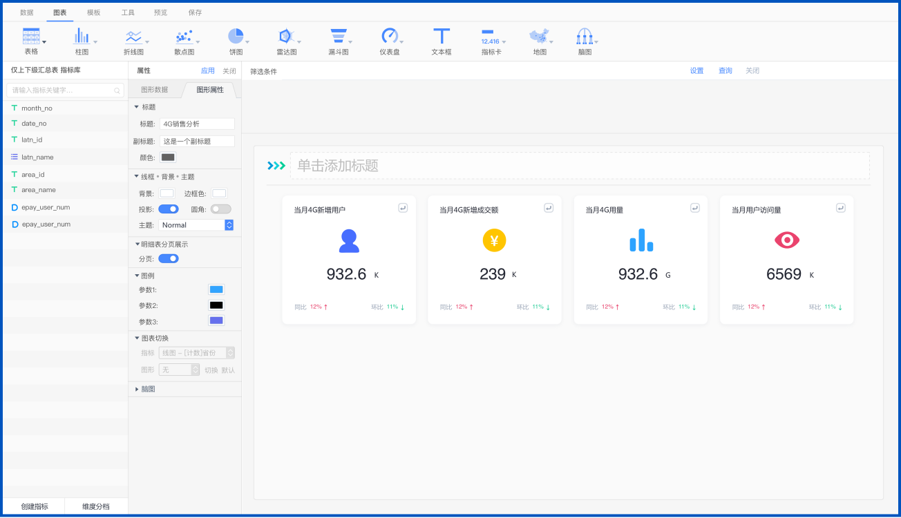

21世纪，是万物智能互联的的时代，海量设备接入网络必然会带来数据海啸，数据探索与分析技术已经成为通用技术，无论是在IT端还是在业务端，数据分析已经无处不在。

.png)
万物智联，为自助式分析创造了新机会
万物智联时代下的数据存储形态，也为自助式的数据可视化分析创造了新的机会。万物智联时代，数据将无处不在，数据将分布在云-网-边，呈网状分布结构。而可以无缝连接合并多种云-网-边数据源的探索分析工具，能够让用户轻松对任何地点、任何类型的数据进行探索和可视化，发现隐藏价值。

嵌入式的商业智能，让数据分析无处不在
企业已经越来越多的将数据分析融入到企业日常的生产、经营、管理等业务活动中，用数据来驱动企业流程的优化与自动化，完成企业业务活动和流程的变革与创新。嵌入式的商业智能的发展，必然会让数据分析无处不在，通过数据可视化与数据探索分析的嵌入式能力建设，注智并优化企业生产经营活动，推动企业科学决策和业务创新。
.png)
大数据分析趋于平民化、普适化
数据探索分析进一步普及，人们将要求更加自然的方式来处理和探索数据价值，数据分析界面需要变得更加自然，可以使用自然文字/语言来探索和分析数据，让数据、图表和仪表板更佳易于操作。
在数据分析将无处不在的趋势背景下，企业在数据分析普适化的道路上，我们需要关注哪些方面和解决哪些问题？

任何一种新型技术在通过孵化，创新后，都有一个普适的过程。普适的过程也会是组织人员与技术工具的互相适应过程。
所以，数据分析的普适化，首先会要求企业组织和企业员工越来越多的具备数据和分析的技能。在企业数字化转型的浪潮下，要求企业各组织单元和企业员工的数据素养会得到持续的提升，要求员工用数据思维去思考解决问题，甚至是去做业务创新。
亚信提供自助式的大数据探索分析工具
让你成为数据分析专家！！！
AISware DataDiscovery数据探索分析平台。旨在打造敏捷开放的数据探索与可视化分析工具，通过提供自助式、可视化、业务术语化、分析算法集成化的数据探索与分析能力，让业务分析师都能直接使用该平台，进行拖拽式数据分析设计，理解数据本质，构建从问题到答案的桥梁。

用下面的主界面，拖一拖，拉一拉，仪表板就制作完成啦，便捷得不要不要的。 不信？ 让我三步就教会你！
选择数据源。从“数据”菜单下，选择你要分析的数据。
从“图表”组件下拖一个你感兴趣的可视化组件到中间区域。在中间区域占多大？放在什么位置？你按住组件右下角随意拖放，喜欢怎么样都可以哦。
就是要将你敢兴趣的组件捆绑上数据，设置组件要展示的维度和指标，就万事大吉了。
不需要写SQL语句，适合普通大众所有人操作，布局灵活，钻取联动、各种各样的分析方法函数、丰富的可视化组件库，复杂表格制作、各种展示主题交互体验等，是一款平民化的数据分析与数据可视化工具。

通过改变统计维度层次、变化分析粒度，实现从微观到宏观或者从宏观到微观的钻取分析。
通过多图表的数据联动变化，实现精准联动分析，从而使用户对数据的了解更深入，更容易发现问题，做出正确的决策。

用这个工具软件可以做出来适合在PC端、大屏上、移动APP端展现的效果。呈上几个效果图：
用这个工具软件可以做出来适合在PC端、大屏上、移动APP端展现的效果。呈上几个效果图：